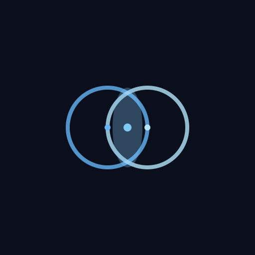

Search Lens
Classic search icon with modern gradient and sparkle accents
F Letter
Abstract "F" for Fera with gradient stroke and decorative dots
Infinity Loop
Continuous search concept with flowing infinity symbol
Wave Flow
Dynamic flowing waves representing data streams

Venn Circles
Overlapping circles symbolizing comprehensive search
Original Star
Star/sparkle design with smooth curves